ShreX: Getting
Started
About the Guide
This guide provides information about using ShreX. A hands-on
tutorial
is given to help you to start using the GUI.
ShreX is a tool developed for proof of concept. There is no
gurantee
that the system will function properly in the scenarios other than
described
in the example. Users are welcome to further explore the
features,
fix bugs, and enhance its functionality through working with its source
code.
1.Example
Throughout the guide, we use the following IMDB example to illustrate
how
to work with ShreX GUI.
XML Schema:
<?xml version="1.0"?>
<schema xmlns="http://www.w3.org/2001/XMLSchema"
targetNamespace="http://www.cse.ogi.edu/test"
elementFormDefault="qualified"
xmlns:test="http://www.cse.ogi.edu/test"
xmlns:shrex="http://www.cse.ogi.edu/shrex">
<element name="IMDB" type="test:IMDBType"/>
<complexType name="IMDBType">
<sequence>
<element name="SHOW"
type="test:SHOWType"
minOccurs="0"
maxOccurs="unbounded"/>
</sequence>
</complexType>
<complexType name="SHOWType">
<sequence>
<element name="TITLE"
type="integer"/>
<element name="YEAR"
type="integer"/>
<choice>
<element name="BOXOFFICE"
type="integer"/>
<element name="SEASONS"
type="string"/>
</choice>
<element name="REVIEW" type="integer"
minOccurs="0" maxOccurs="unbounded"/>
</sequence>
</complexType>
</schema>
|
XML Document:
<IMDB xmlns="http://www.cse.ogi.edu/test"
xmlns:xsi =
"http://www.w3.org/2001/XMLSchema-instance">
<SHOW>
<TITLE>1</TITLE>
<YEAR>2</YEAR>
<BOXOFFICE>3</BOXOFFICE>
<REVIEW>4</REVIEW>
<REVIEW>5</REVIEW>
</SHOW>
<SHOW>
<TITLE>6</TITLE>
<YEAR>7</YEAR>
<BOXOFFICE>8</BOXOFFICE>
<REVIEW>9</REVIEW>
<REVIEW>10</REVIEW>
<REVIEW>11</REVIEW>
</SHOW>
<SHOW>
<TITLE>12</TITLE>
<YEAR>13</YEAR>
<SEASONS>S14</SEASONS>
<REVIEW>15</REVIEW>
<REVIEW>16</REVIEW>
<REVIEW>17</REVIEW>
</SHOW>
<SHOW>
<TITLE>18</TITLE>
<YEAR>19</YEAR>
<SEASONS>S20</SEASONS>
<REVIEW>21</REVIEW>
</SHOW>
</IMDB>
|
2. Working with ShreX: a tutorial
This section went through an example to demonstrate how to customize
XML-to-relational
mapping, load generated schema, shred conforming documents into
relational
database, and query the stored XML data using XPath. The tutorial
is based on the Unix environment. Operations in Windows should be
similar.
2.1 Install and Launch ShreX GUI
The steps to create install and launch ShreX GUI are as follows:
- unzip shrex.zip to an install directory $INSTALL_DIR$
>cd $INSTALL_DIR$
>unzip shrex.zip
- compile the source code ( assume ant
is
installed on your machine)
>cd $INSTALL_DIR$/shrex
>ant
- start the GUI
>cd $INSTALL_DIR$/shrex
>java -cp
./lib/xml-apis.jar:./lib/xercesImpl.jar:./lib/shrex.jar:./lib/commons-jxpath-1.1.jar
gui.XSGui &
The welcome page of the GUI is shown in Figure 1.
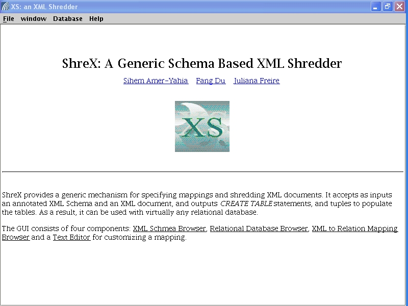
Figure 1: Welcome Page
2.2 XML Schema Mapping
2.2.1 Open a Schema
To open a schema, click File->Open schema, then choose
data/demo/imdd.xsd
The left pane shows the schema tree, the right pane has five tab
panels.
2.2.2 View Schema Information
Click the XML Schema tab. Select an element/attribute in the
schema
tree. The corresponding information is displayed in the right
pane.
As shown in Figure 2, the informaiton about Title element inside Show
is
display in the right pane.
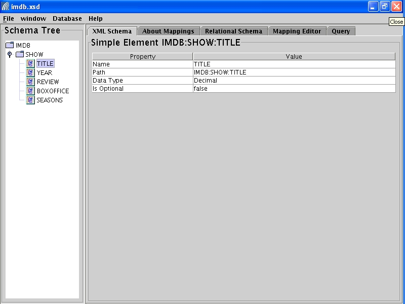
Figure 2: Schema Browser
2.2.3 View XML-to-Relational Mapping
The Mappings pane shows the correspondence between XML schema and
relational
schema. Figure 3 displays that the Title element inside Show is
mapped
to field TITLE in the table IMDB_SHOW.
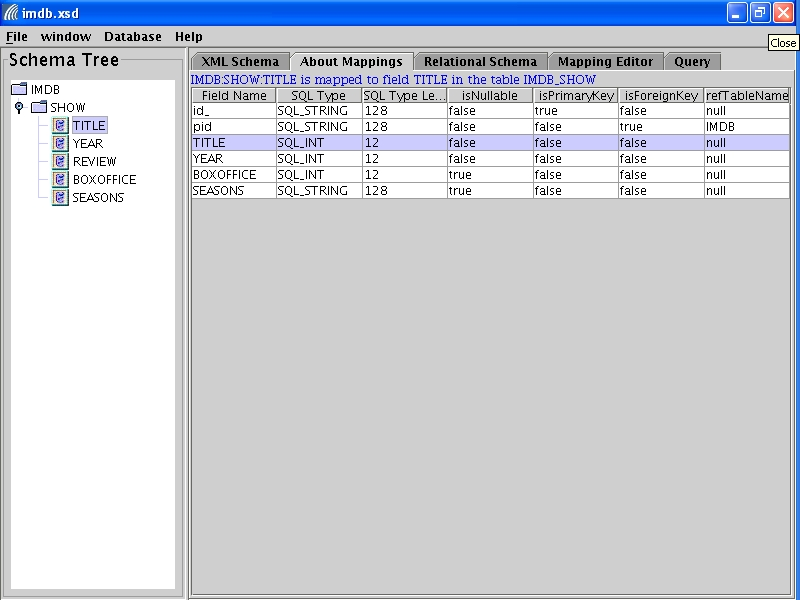
Figure 3: Mapping Browser
2.2.4 View Generated Relational Schema
All the generated relational tables are listed in the Relational Schema
Pane. View details about a table by clicking its name.
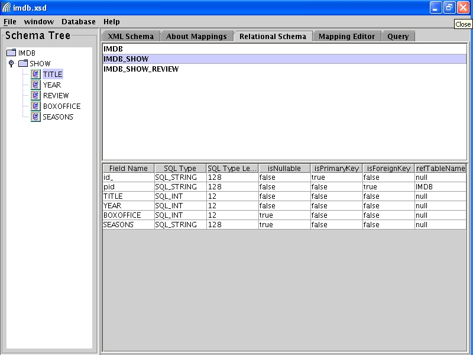
Figure 4: Generated Relational Schema Browser
2.2.5 Customize the Schema
By default, the opened schema imdb.xsd is mapped to three relational
tables.
CREATE TABLE IMDB
(
id_ VARCHAR(128) NOT NULL,
PRIMARY KEY (id_)
);
CREATE TABLE IMDB_SHOW
(
id_ VARCHAR(128) NOT NULL,
pid VARCHAR(128) NOT NULL,
TITLE NUM(12) NOT NULL,
YEAR NUM(12) NOT NULL,
BOXOFFICE NUM(12),
SEASONS VARCHAR(128),
PRIMARY KEY (id_),
FOREIGN KEY (pid) REFERENCES
IMDB
);
CREATE TABLE IMDB_SHOW_REVIEW
(
id_ VARCHAR(128) NOT NULL,
pid VARCHAR(128) NOT NULL,
REVIEW NUM(12),
PRIMARY KEY (id_),
FOREIGN KEY (pid) REFERENCES
IMDB_SHOW
);
|
We may customize the mapping in various ways. Go to the Mapping
Editor
panel. Made the following changes
as shown in Figure 4:
<element name="TITLE" type="integer"
shrex:outline="true"/>
<element name="YEAR" type="integer"
shrex:fieldname="ShowYear"/>
Click to "save
and reload"
schema.
Come back to the Mapping pane. The element Title is now mapped
to a table, and the element Year is mapped to a field with different
name
as shown in Figure 6 and 7.

Figure 5: Customize through Editor
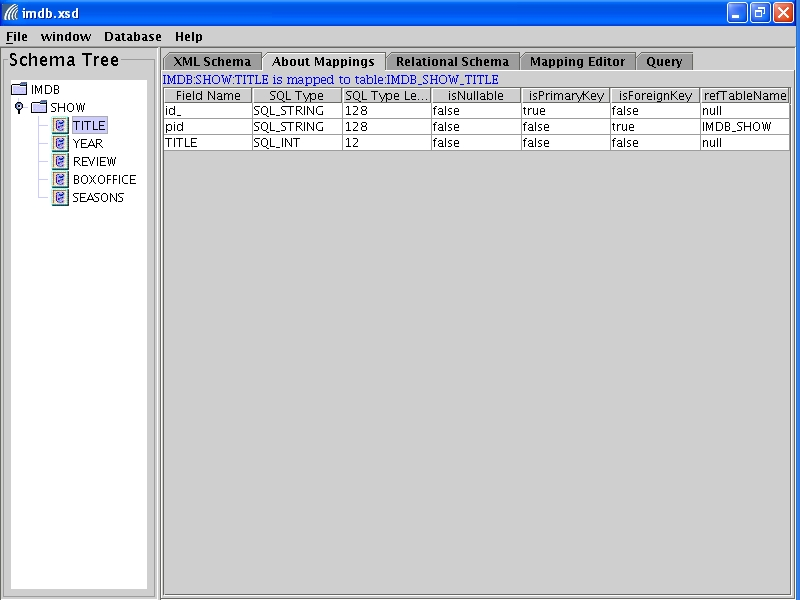
Figure 6: Mapping information for element Title after
customization
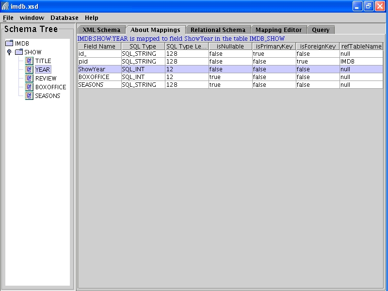
Figure 7: Mapping information for element Year after customization
We can also map the entire document into a single edge table.
Made the following changes:
<element name="IMDB" type="test:IMDBType"
shrex:edgemapping="true"/>
Click to "save
and reload"
schema.
Come back to the Relational Schema Pane. There will be only
one
table generated as shown in Figure 8.
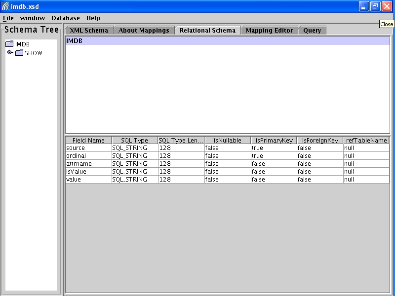
Figure 8: Edge Mapping Table
2.2.6 Load the Schema to Database
The steps to load the generated relational table schema to a database
is
as follows. Here we assume you load the original schema.
You
can also tried to load the customized schema.
- Click File->Load Table Schema.
- Choose the "default" connection and click OK. The default
database
connection is defined in ShreX configuration file. In the
distribution,
the default connection is set to "File" database, which is a simulated
database for demo purpose. It does not have query capability.
- After seeing the verificaiton message, click OK.
Click Database->Connections. In the top left pane, the list of
connections is shown. There is only the default filed-based
connection
available. The tables in the default connection are shown in the
bottom left pane. Since we have not loaded any document, the
table
only shows headers in the right pane (See Figure 9).
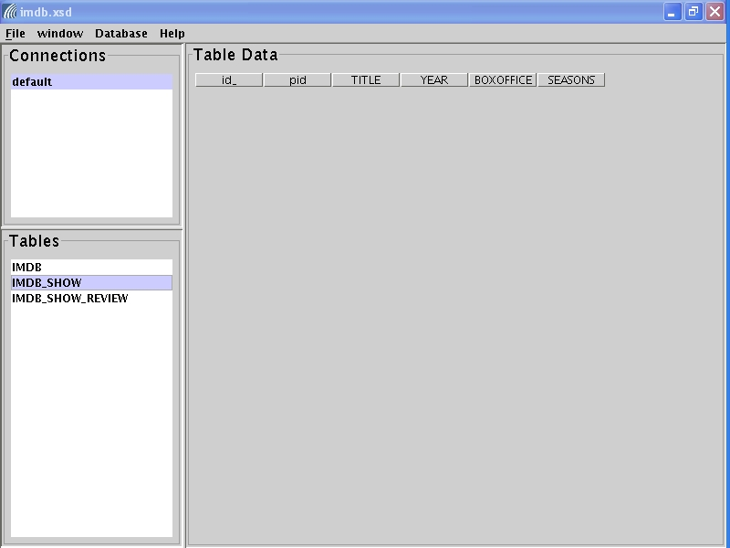
Figure 9: Connection page after loading the schema
2.3 Load XML Document file->load docuemnt
The steps to load a document conforming to the XML schema is as
follows:
- Click File->Load Document.
- You will be prompted with a file chooser. Select
data/demo/imdb.xml
- Choose the "default" connection and click OK.
- After seeing the verificaiton message, click OK.
- Click Database->Connections. You should be able to see
the
loaded
tuples in the tables (See Figure 10).
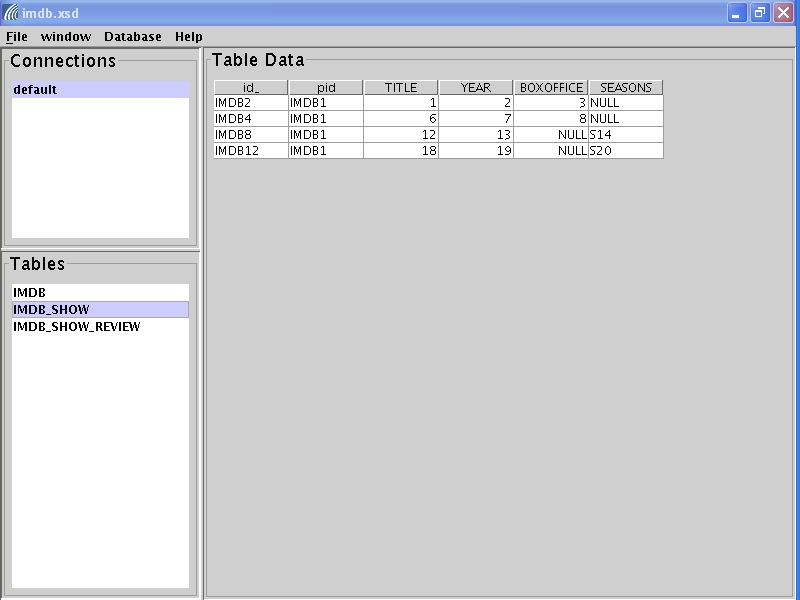
Figure 10: Connection Page After Loading the document
2.4 Query XML Document
ShreX supports a subset of XPath expression query. In the GUI, if
users click on the schema tree in the left pane, the path for the
selected
node automatically appears in the XPath input field, so users can
modify
the path to make a query. For example,if user click the element
"/IMDB/SHOW/TITLE"
in the schema tree, the path appears in the right pane immediately.
There are two buttons in the right pane. Clicking on the
"translate"
button displays the generate SQL query. Clicking on the
"evaluate"
button, users will be prompted to select a DB connection, then the
query
result will be displayed. The translated SQL for
"/IMDB/SHOW/TITLE"
is shown in Figure 11.
Since we are using the simulated file-based database, we could not
actually perform the translated SQL query.
Users might try it with a real database.
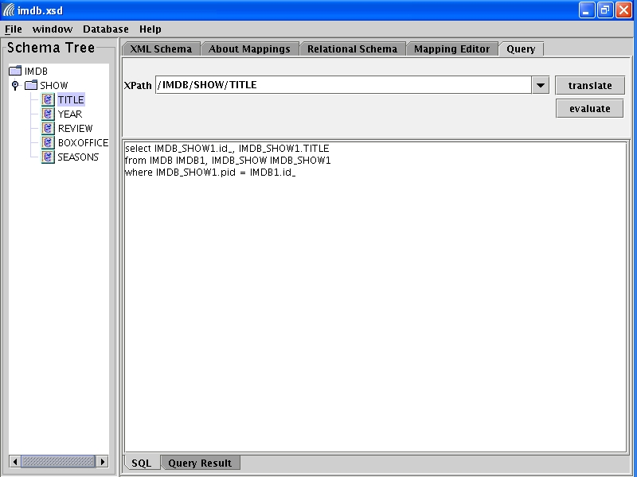
Figure 11: Query page
3. Relational Database Plugin
ShreX can work with all relational databases through a common interface
(See Figure 12).
There are three implementation coming with the distribution: MySQL,
DB2 and Oracle. Users who wants to use other databases need to
provide
their own implementation for the interface
"edu.ogi.cse.xs.database.DBConnection".
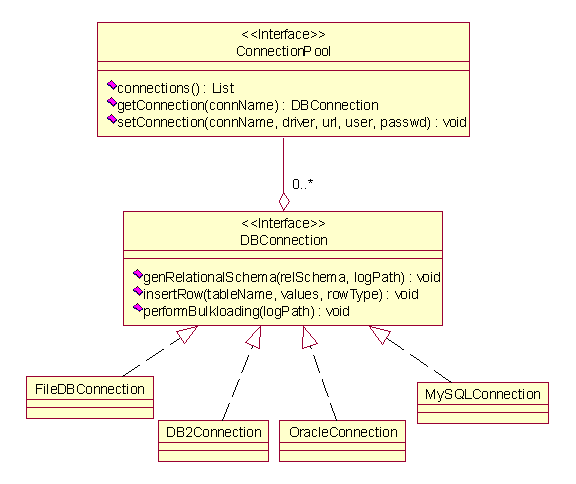
Figure 13: Database Interface
We show how to connect to a MySQL database. The steps to use DB2
or Oracle are similar.
Start GUI with MySQL JDBC lib in
the Classpath
>java -cp
./lib/xml-apis.jar:./lib/xercesImpl.jar:./lib/shrex.jar:./lib/commons-jxpath-1.1.jar:./lib/mysqljava.jar
gui.XSGui &
Test MySQL Connection
It is important to make sure that a mysql connection is available.
There are two ways to test a connection.
- Use MySQL shell. Enter the shell by providing host, user
and
password
informaiton.
- Use Java client program to connect to MySQL through JDBC. run
java -cp ./lib/mysqljava.jar:./lib/xs.jar cmd.TestMysqlConnection
URL USERNAME PASSWORD
e.g.
java -cp ./lib/mysqljava.jar:./lib/xs.jar cmd.TestMysqlConnection
jdbc:mysql://localhost/xs mysql welcome
Add MySQL Connection
Before loading relational schemas to MySQL database, users need to
add
a connection.
click menu "Database"->"Add a Connection"
you will see a pop-up panel. Fill value for each field:
- connection id: choose whatever you like, for example
"mydemo"
- user name: the user name to access the DB, e.g. "mysql"
- password: the password to access the DB, e.g."welcome"
- Database URL: the host name and database name, e.g.
"jdbc:mysql://localhost/xs".
The "jdbc:mysql://"
part is fixed for a MySQL connection. If your MySQL
install
is not local, you need to replace "localhost"
with the machine name where the DB is installed. "xs"
is the database name.
- Driver: the defualt should be good for MySQL
Click "add", you will see a new item "mydemo" added to left pane.
Click "mydemo", if there are any tables in the database, they should
show
up.
4. Related Documents
For more information about ShreX, please see:
- ShreX: A Comprehensive Solution to the
XML-to-Relational
Mapping Problem
(by Sihem Amer-Yahia, Fang Du and Juliana Freire )
In Proceedings of WIDM, 2004.
- ShreX: Managing XML Documents in Relational
Databases
(by Fang Du, Sihem Amer-Yahia and Juliana Freire )
In Proceedings of VLDB Demonstration, 2004.
- Java Doc
- Customization Example